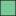

<!doctype html>
<html lang="en">
    <head>
        <meta charset="utf-8">
        <meta http-equiv="X-UA-Compatible" content="IE=edge">
        <meta name="viewport" content="initial-scale=1,user-scalable=no,maximum-scale=1,width=device-width">
        <meta name="mobile-web-app-capable" content="yes">
        <meta name="apple-mobile-web-app-capable" content="yes">
        <link rel="stylesheet" href="css/leaflet.css"><link rel="stylesheet" href="css/L.Control.Locate.min.css">
        <link rel="stylesheet" href="css/qgis2web.css"><link rel="stylesheet" href="css/fontawesome-all.min.css">
        <style>
        #map {
            width: 1501px;
            height: 817px;
        }
        </style>
        <title></title>
    </head>
    <body>
        <div id="map">
        </div>
        <script src="js/qgis2web_expressions.js"></script>
        <script src="js/leaflet.js"></script><script src="js/L.Control.Locate.min.js"></script>
        <script src="js/leaflet.rotatedMarker.js"></script>
        <script src="js/leaflet.pattern.js"></script>
        <script src="js/leaflet-hash.js"></script>
        <script src="js/Autolinker.min.js"></script>
        <script src="js/rbush.min.js"></script>
        <script src="js/labelgun.min.js"></script>
        <script src="js/labels.js"></script>
        <script src="data/batiments_0.js"></script>
        <script src="data/Parcelles_1.js"></script>
        <script>
        var highlightLayer;
        function highlightFeature(e) {
            highlightLayer = e.target;

            if (e.target.feature.geometry.type === 'LineString') {
              highlightLayer.setStyle({
                color: '#ffff00',
              });
            } else {
              highlightLayer.setStyle({
                fillColor: '#ffff00',
                fillOpacity: 1
              });
            }
        }
        var map = L.map('map', {
            zoomControl:true, maxZoom:28, minZoom:1
        }).fitBounds([[44.89810867466095,-0.1624487134933458],[44.911703567036525,-0.12714542231847398]]);
        var hash = new L.Hash(map);
        map.attributionControl.setPrefix('<a href="https://github.com/tomchadwin/qgis2web" target="_blank">qgis2web</a> &middot; <a href="https://leafletjs.com" title="A JS library for interactive maps">Leaflet</a> &middot; <a href="https://qgis.org">QGIS</a>');
        var autolinker = new Autolinker({truncate: {length: 30, location: 'smart'}});
        L.control.locate({locateOptions: {maxZoom: 19}}).addTo(map);
        var bounds_group = new L.featureGroup([]);
        function setBounds() {
        }
        function pop_batiments_0(feature, layer) {
            layer.on({
                mouseout: function(e) {
                    for (i in e.target._eventParents) {
                        e.target._eventParents[i].resetStyle(e.target);
                    }
                },
                mouseover: highlightFeature,
            });
            var popupContent = '<table>\
                    <tr>\
                        <td colspan="2">' + (feature.properties['nom_batime'] !== null ? autolinker.link(feature.properties['nom_batime'].toLocaleString()) : '') + '</td>\
                    </tr>\
                    <tr>\
                        <td colspan="2">' + (feature.properties['propriete'] !== null ? autolinker.link(feature.properties['propriete'].toLocaleString()) : '') + '</td>\
                    </tr>\
                </table>';
            layer.bindPopup(popupContent, {maxHeight: 400});
        }

        function style_batiments_0_0() {
            return {
                pane: 'pane_batiments_0',
                opacity: 1,
                color: 'rgba(35,35,35,1.0)',
                dashArray: '',
                lineCap: 'butt',
                lineJoin: 'miter',
                weight: 1.0, 
                fill: true,
                fillOpacity: 1,
                fillColor: 'rgba(0,0,0,1.0)',
                interactive: false,
            }
        }
        map.createPane('pane_batiments_0');
        map.getPane('pane_batiments_0').style.zIndex = 400;
        map.getPane('pane_batiments_0').style['mix-blend-mode'] = 'normal';
        var layer_batiments_0 = new L.geoJson(json_batiments_0, {
            attribution: '',
            interactive: false,
            dataVar: 'json_batiments_0',
            layerName: 'layer_batiments_0',
            pane: 'pane_batiments_0',
            onEachFeature: pop_batiments_0,
            style: style_batiments_0_0,
        });
        bounds_group.addLayer(layer_batiments_0);
        map.addLayer(layer_batiments_0);
        function pop_Parcelles_1(feature, layer) {
            layer.on({
                mouseout: function(e) {
                    for (i in e.target._eventParents) {
                        e.target._eventParents[i].resetStyle(e.target);
                    }
                },
                mouseover: highlightFeature,
            });
            var popupContent = '<table>\
                    <tr>\
                        <td colspan="2"><strong>SS_PARCELL</strong><br />' + (feature.properties['SS_PARCELL'] !== null ? autolinker.link(feature.properties['SS_PARCELL'].toLocaleString()) : '') + '</td>\
                    </tr>\
                    <tr>\
                        <th scope="row">CHATEAU</th>\
                        <td>' + (feature.properties['CHATEAU'] !== null ? autolinker.link(feature.properties['CHATEAU'].toLocaleString()) : '') + '</td>\
                    </tr>\
                    <tr>\
                        <th scope="row">CEPAGE</th>\
                        <td>' + (feature.properties['CEPAGE'] !== null ? autolinker.link(feature.properties['CEPAGE'].toLocaleString()) : '') + '</td>\
                    </tr>\
                    <tr>\
                        <th scope="row">ANNEE_PLANTATION</th>\
                        <td>' + (feature.properties['ANNEE_PLANTATION'] !== null ? autolinker.link(feature.properties['ANNEE_PLANTATION'].toLocaleString()) : '') + '</td>\
                    </tr>\
                    <tr>\
                        <th scope="row">SURFACE_PRATIQUE_HA</th>\
                        <td>' + (feature.properties['SURFACE_PRATIQUE_HA'] !== null ? autolinker.link(feature.properties['SURFACE_PRATIQUE_HA'].toLocaleString()) : '') + '</td>\
                    </tr>\
                    <tr>\
                        <th scope="row">NB_PIEDS</th>\
                        <td>' + (feature.properties['NB_PIEDS'] !== null ? autolinker.link(feature.properties['NB_PIEDS'].toLocaleString()) : '') + '</td>\
                    </tr>\
                    <tr>\
                        <th scope="row">SURFACE_cvi</th>\
                        <td>' + (feature.properties['SURFACE_cvi'] !== null ? autolinker.link(feature.properties['SURFACE_cvi'].toLocaleString()) : '') + '</td>\
                    </tr>\
                    <tr>\
                        <th scope="row">ETAT</th>\
                        <td>' + (feature.properties['ETAT'] !== null ? autolinker.link(feature.properties['ETAT'].toLocaleString()) : '') + '</td>\
                    </tr>\
                    <tr>\
                        <th scope="row">ANNEE_ARRACHAGE</th>\
                        <td>' + (feature.properties['ANNEE_ARRACHAGE'] !== null ? autolinker.link(feature.properties['ANNEE_ARRACHAGE'].toLocaleString()) : '') + '</td>\
                    </tr>\
                    <tr>\
                        <th scope="row">PORTE_GREFFE</th>\
                        <td>' + (feature.properties['PORTE_GREFFE'] !== null ? autolinker.link(feature.properties['PORTE_GREFFE'].toLocaleString()) : '') + '</td>\
                    </tr>\
                </table>';
            layer.bindPopup(popupContent, {maxHeight: 400});
        }

        function style_Parcelles_1_0(feature) {
            switch(String(feature.properties['ETAT'])) {
                case 'Jachere':
                    return {
                pane: 'pane_Parcelles_1',
                opacity: 1,
                color: 'rgba(35,35,35,1.0)',
                dashArray: '',
                lineCap: 'butt',
                lineJoin: 'miter',
                weight: 1.0, 
                fill: true,
                fillOpacity: 1,
                fillColor: 'rgba(233,174,102,1.0)',
                interactive: true,
            }
                    break;
                case 'JVSP1':
                    return {
                pane: 'pane_Parcelles_1',
                opacity: 1,
                color: 'rgba(0,0,0,1.0)',
                dashArray: '',
                lineCap: 'butt',
                lineJoin: 'miter',
                weight: 1.0, 
                fill: true,
                fillOpacity: 1,
                fillColor: 'rgba(178,223,138,1.0)',
                interactive: true,
            }
                    break;
                case 'JVSP2':
                    return {
                pane: 'pane_Parcelles_1',
                opacity: 1,
                color: 'rgba(35,35,35,1.0)',
                dashArray: '',
                lineCap: 'butt',
                lineJoin: 'miter',
                weight: 1.0, 
                fill: true,
                fillOpacity: 1,
                fillColor: 'rgba(121,201,152,1.0)',
                interactive: true,
            }
                    break;
                case 'Production':
                    return {
                pane: 'pane_Parcelles_1',
                opacity: 1,
                color: 'rgba(35,35,35,1.0)',
                dashArray: '',
                lineCap: 'butt',
                lineJoin: 'miter',
                weight: 1.0, 
                fill: true,
                fillOpacity: 1,
                fillColor: 'rgba(51,160,44,1.0)',
                interactive: true,
            }
                    break;
            }
        }
        map.createPane('pane_Parcelles_1');
        map.getPane('pane_Parcelles_1').style.zIndex = 401;
        map.getPane('pane_Parcelles_1').style['mix-blend-mode'] = 'normal';
        var layer_Parcelles_1 = new L.geoJson(json_Parcelles_1, {
            attribution: '',
            interactive: true,
            dataVar: 'json_Parcelles_1',
            layerName: 'layer_Parcelles_1',
            pane: 'pane_Parcelles_1',
            onEachFeature: pop_Parcelles_1,
            style: style_Parcelles_1_0,
        });
        bounds_group.addLayer(layer_Parcelles_1);
        map.addLayer(layer_Parcelles_1);
        var baseMaps = {};
        L.control.layers(baseMaps,{'Parcelles<br /><table><tr><td style="text-align: center;"></td><td>Jachere</td></tr><tr><td style="text-align: center;"></td><td>JVSP1</td></tr><tr><td style="text-align: center;"></td><td>JVSP2</td></tr><tr><td style="text-align: center;"></td><td>Production</td></tr></table>': layer_Parcelles_1,' batiments': layer_batiments_0,},{collapsed:false}).addTo(map);
        setBounds();
        resetLabels([layer_Parcelles_1]);
        map.on("zoomend", function(){
            resetLabels([layer_Parcelles_1]);
        });
        map.on("layeradd", function(){
            resetLabels([layer_Parcelles_1]);
        });
        map.on("layerremove", function(){
            resetLabels([layer_Parcelles_1]);
        });
        </script>
    </body>
</html>
